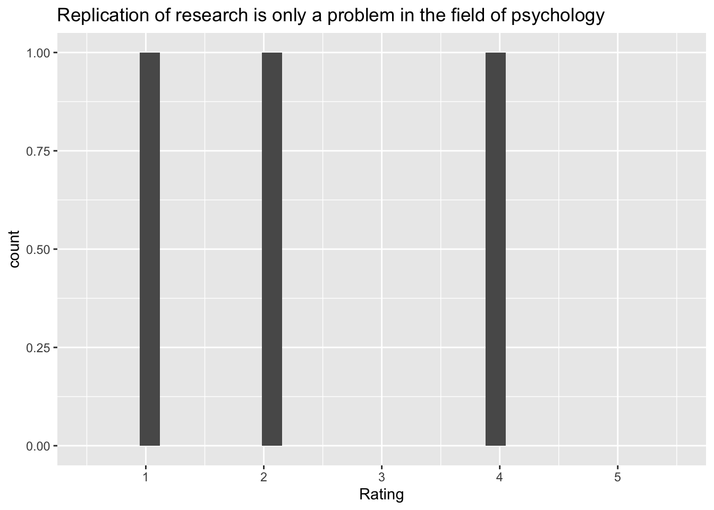

if (!dir.exists('csv')) {
message("Creating missing `csv/`.")
dir.create("csv")
}
if (params$update_data) {
options(gargle_oauth_email = Sys.getenv("GMAIL_SURVEY"))
googledrive::drive_auth()
googledrive::drive_download(
"PSYCH 490.000 Fall 2023 Survey 03 (Responses)",
path = "csv/survey-03-crewell-et-al.csv",
type = "csv",
overwrite = TRUE
)
message("Data updated.")
} else {
message("Using stored data.")
}Survey 03
Purpose
This page documents the data processing steps involved with Survey 03 in PSYCH 490.009.
The survey questions were adapted from those discussed in (Crüwell et al., 2019).
Survey
Preparation
First, we load the external packages (groups of R commands) that we will be using.
Gathering
Next, we download the data from the Google Sheet where it is collected. Dr. Gilmore has stored his Google account credentials in a special environment file that can be accessed by the R command Sys.getenv("GMAIL_SURVEY").
The data file has been saved as a comma-separated value (CSV) format data file in a special directory called csv/.
Note
Because these data might contain sensitive or identifiable information, we only keep a local copy and do not share it publicly via GitHub. This is achieved by adding the name of the data directory to a special .gitignore file.
Cleaning
Next we load the data file and clean it.
survey_03 <-
readr::read_csv("csv/survey-03-crewell-et-al.csv", show_col_types = FALSE)
# Google Forms puts the full question in the top row of the data file.
# We use the names() function to extract and print the original questions.
survey_03_qs <- names(survey_03)
survey_03_qs [1] "Timestamp"
[2] "The field of psychology has problems replicating results"
[3] "Replication of research is only a problem in the field of psychology"
[4] "The incentive structure in psychological research can undermine the broader goals of science"
[5] "The results from studies with low statistical power are by definition incorrect"
[6] "Researchers who perform replication studies are not qualified to conduct psychological research"
[7] "It is important for a researcher to report all measures and experimental conditions that were included in a study"
[8] "For a researcher, how important is choosing a sample size before running a study?"
[9] "How important is it to make data publicly available so that results can be verified by other researchers?"
[10] "How important are decisions in data collection, analysis, and reporting in affecting how likely a researcher will find a significant effect?"
[11] "How important is it to report studies that “don’t work out?”"
[12] "How important is it that results from a psychology study are counterintuitive (e.g., different from what you would expect)?" Clean/shorten names
For plotting and analyses, it’s usually easier to shorten the questions by creating a short name that reflects the underlying idea or construct. We’ll use the rename() function from the dplyr package for this.
new_names <-
c(
"timestamp",
"psych_problems_replicating",
"replication_problem_psych_only",
"incentives_undermine",
"low_power_incorrect",
"replicators_unqualified",
"report_all_measures_important",
"decide_n_before_important",
"share_data_important",
"collection_analysis_decisions_affect",
"report_null_findings_important",
"counterintuitive_results_important"
)
# Swap out old (long) names for new (short) names
long_names <- names(survey_03)
names(survey_03) <- new_namesData dictionary
We’ll pause here to start building a data dictionary, a file that explains the origin, format, and usage of our dataset.
# Make new data frame with long and short names for reference
survey_03_data_dictionary <-
tibble::tibble(q_long = long_names, q_short = new_names)
survey_03_data_dictionary |>
knitr::kable(format = 'html') |>
kableExtra::kable_classic()| q_long | q_short |
|---|---|
| Timestamp | timestamp |
| The field of psychology has problems replicating results | psych_problems_replicating |
| Replication of research is only a problem in the field of psychology | replication_problem_psych_only |
| The incentive structure in psychological research can undermine the broader goals of science | incentives_undermine |
| The results from studies with low statistical power are by definition incorrect | low_power_incorrect |
| Researchers who perform replication studies are not qualified to conduct psychological research | replicators_unqualified |
| It is important for a researcher to report all measures and experimental conditions that were included in a study | report_all_measures_important |
| For a researcher, how important is choosing a sample size before running a study? | decide_n_before_important |
| How important is it to make data publicly available so that results can be verified by other researchers? | share_data_important |
| How important are decisions in data collection, analysis, and reporting in affecting how likely a researcher will find a significant effect? | collection_analysis_decisions_affect |
| How important is it to report studies that “don’t work out?” | report_null_findings_important |
| How important is it that results from a psychology study are counterintuitive (e.g., different from what you would expect)? | counterintuitive_results_important |
We’ll add other items to the data dictionary later.
Visualizations
To do
I should write a function to generate the summary plots.
my_plot_fn <- function(data, var) {
ggplot(data, aes(x = {{var}})) +
scale_x_binned(n.breaks = 5) +
geom_bar() +
xlim(c(0, 5.5))
}
survey_03 |>
my_plot_fn(low_power_incorrect)Scale for x is already present.
Adding another scale for x, which will replace the existing scale.
The field of psychology has problems replicating results
survey_03 |>
dplyr::select(psych_problems_replicating) |>
ggplot() +
aes(x = psych_problems_replicating) +
geom_histogram() +
xlim(c(1, 5)) +
xlab("") +
ggtitle(survey_03_data_dictionary$q_long[2])`stat_bin()` using `bins = 30`. Pick better value with `binwidth`.Warning: Removed 2 rows containing missing values (`geom_bar()`).
References
Crüwell, S., Doorn, J. van, Etz, A., Makel, M. C., Moshontz, H., Niebaum, J. C., … Schulte-Mecklenbeck, M. (2019). Seven easy steps to open science. Zeitschrift für Psychologie, 227(4), 237–248. https://doi.org/10.1027/2151-2604/a000387
Silberzahn, R., Uhlmann, E. L., Martin, D. P., Anselmi, P., Aust, F., Awtrey, E., … Nosek, B. A. (2018). Many analysts, one data set: Making transparent how variations in analytic choices affect results. Advances in Methods and Practices in Psychological Science, 1(3), 337–356. https://doi.org/10.1177/2515245917747646